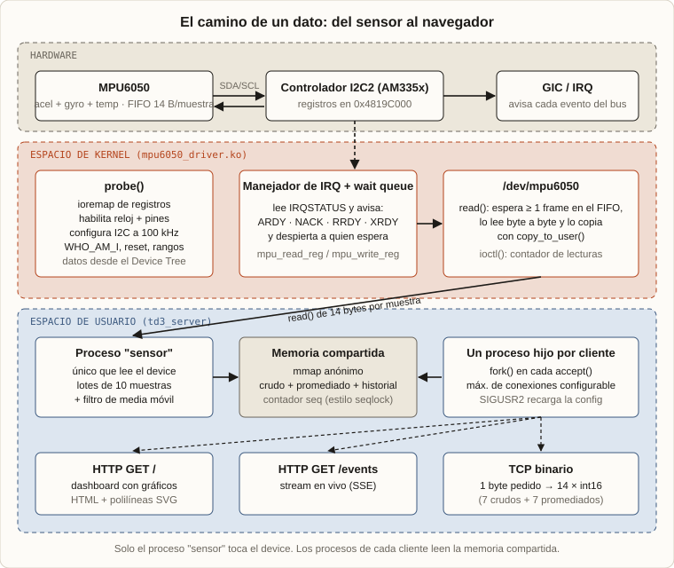
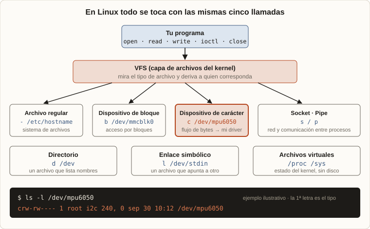

2025 · Linux embebido · BeagleBone Black (AM335x) · Driver de kernel en C
Desarrollo de drivers para Linux
En el proyecto anterior construí un sistema operativo desde cero. Este es el lado opuesto: meterme en un sistema que ya existe, enorme, y hacer que haga algo nuevo. La tarea es simple de decir: leer un sensor (un MPU6050, acelerómetro, giroscopio y temperatura) en una BeagleBone Black y transmitir los datos por red con un servidor. Lo difícil es todo lo que hay en el medio.
¿Por qué es más complejo que hacerlo desde cero?
Cuando construís todo vos, tenés libertad total: elegís cómo se organiza la memoria, dónde va cada cosa y podés acomodar el sistema para que las cosas funcionen de la forma más directa. En un microcontrolador simple, leer un periférico se resume en habilitar unos registros y listo.
En Linux no. El kernel ya tiene sus reglas, sus abstracciones y sus propios dueños del hardware. Para leer un sensor hay que activar y validar todo un sistema y tocar registros de varios bloques distintos, respetando cómo Linux se organiza. El sistema resultante es simple. Lo complejo es el desarrollo interno de cada pieza.
1. Qué armé
2. En Linux, todo es un archivo
3. Qué es un char device y qué otros tipos hay
4. Por qué fue tan trabajoso
5. Mis archivos: dónde van y qué modifican
6. Cómo funciona el driver
7. Del archivo a la red: el servidor
8. Cómo lo probé
1. Qué armé
Cuatro piezas, de abajo hacia arriba:
- Un driver de kernel (
mpu6050_driver.ko) que habla con el controlador I²C de la placa, configura el sensor y expone/dev/mpu6050. - Un Device Tree Overlay que le dice al kernel que ese controlador lo maneja mi driver.
- Un programa de prueba en espacio de usuario que lee el dispositivo y muestra los valores en unidades físicas (g, °/s, °C).
- Un servidor TCP concurrente que lee el dispositivo, filtra las muestras y las publica como página web con gráficos, stream en vivo y un protocolo binario.
Una aclaración: el sensor usa el bus I²C (dos cables, SDA y SCL), que no hay que confundir con I²S, el bus de audio.

Antes de entrar al driver hace falta entender por qué el resultado se ve como un archivo, y no como una función.
2. En Linux, todo es un archivo
La idea central de Unix y Linux es que casi todo se usa con las mismas cinco operaciones: open, read, write, ioctl y close. Un texto en disco, un pendrive, una consola, un socket de red o un sensor se manejan igual. El programa no tiene que saber qué hay del otro lado: el kernel, a través del VFS (Virtual File System), mira qué tipo de archivo es y pasa la llamada a quien corresponda.

Los tipos de archivo
El primer carácter de ls -l dice de qué tipo es cada uno:
| Letra | Tipo | Qué es y ejemplo |
|---|---|---|
- | Regular | Bytes guardados en un sistema de archivos: texto, ejecutables, imágenes. |
d | Directorio | Un archivo cuyo contenido es una lista de nombres. |
l | Enlace simbólico | Un archivo que apunta a otro. |
c | Dispositivo de carácter | Un flujo de bytes que atiende un driver, sin acceso aleatorio: teclado, puertos serie y /dev/mpu6050. |
b | Dispositivo de bloque | Almacenamiento accedido por bloques: discos, tarjetas SD, como /dev/mmcblk0. |
s | Socket | Punta de una comunicación de red o local. |
p | Pipe (FIFO) | Un canal para pasar bytes entre procesos. |
Además hay archivos virtuales: /proc y /sys no están en ningún disco, el kernel los genera al momento y sirven para leer y modificar su estado como si fueran texto.
Cómo se enlaza un archivo con un driver
Un dispositivo de carácter no lleva contenido: lleva dos números, mayor y menor. El mayor identifica al driver y el menor a cuál de sus dispositivos. Cuando un programa hace open("/dev/mpu6050"), el kernel busca ese par y llama a las funciones que el driver registró en su estructura file_operations: open, read, write, unlocked_ioctl y release. En mi driver es exactamente eso: read() del programa termina ejecutando dev_read() dentro del kernel, donde se habla con el sensor.
Extracto de scr/mpu6050_driver.c
static const struct file_operations fops = {
.owner = THIS_MODULE,
.open = dev_open,
.read = dev_read,
.write = dev_write,
.unlocked_ioctl = dev_ioctl,
.release = dev_release,
};ioctl es la puerta para todo lo que no encaja en leer o escribir bytes. Mi driver la usa para preguntar cuántas lecturas se hicieron desde que se cargó el módulo.
Desde arriba, el sensor es un archivo. Pero un dispositivo de carácter es solo una de las formas que tiene Linux de mostrar hardware. Vale la pena ver cuáles hay.
3. Qué es un char device y qué otros tipos hay
Linux clasifica los dispositivos según cómo se accede a sus datos. Hay tres familias, y elegir la correcta es una de las primeras decisiones al escribir un driver.
Dispositivo de carácter (char device)
Es un dispositivo cuyos datos se tratan como un flujo de bytes, leídos y escritos en orden, sin una estructura de bloques. Cada read() o write() del programa llega directo al driver, que decide qué hacer: devolver lo que tenga, esperar a que haya algo o rechazar la operación. No pasa por la caché de bloques del kernel.
Ejemplos típicos: un teclado, un mouse, un puerto serie (/dev/ttyS0), /dev/null, /dev/random y la mayoría de los sensores. El MPU6050 es un caso claro: entrega un flujo de muestras a medida que las mide. No existe algo como "leer el bloque número 5 del sensor", y es el driver el que decide bloquear al programa hasta que haya una muestra nueva.
Así se crea uno, y es lo que hace la función mpu6050_init() de mi módulo:
alloc_chrdev_region()reserva un número mayor y menor para el dispositivo.cdev_init()ycdev_add()asocian ese número con mi tabla de funciones (file_operations:open,read,write,ioctl,release).class_create()ydevice_create()registran el dispositivo en/sys/class/y avisan al espacio de usuario (uevent). El sistema de dispositivos (udevodevtmpfs) recibe el aviso y crea el archivo/dev/mpu6050.
En el código de mpu6050_init() son estas llamadas (recorté el manejo de errores, que en el original libera en orden inverso lo ya reservado):
Extracto de mpu6050_init()
ret = alloc_chrdev_region(&driver.dev_num, MENOR, CANT_DISP, DEVICE_NAME);
driver.c_dev = cdev_alloc();
cdev_init(driver.c_dev, &fops); // le asigno las file_operations
ret = cdev_add(driver.c_dev, driver.dev_num, CANT_DISP);
driver.class_ptr = class_create(CLASS_NAME);
driver.class_ptr->dev_uevent = dev_uevent; // se ejecuta cuando device_create sale bien
driver.device_ptr = device_create(driver.class_ptr, NULL, driver.dev_num, NULL, DEVICE_NAME);
ret = platform_driver_register(&mpu6050_platform_driver);Mi driver también manda en ese aviso los permisos 0666, para que cualquier usuario pueda abrir el dispositivo sin sudo.
Extracto de dev_uevent()
static int dev_uevent(const struct device *dev, struct kobj_uevent_env *env)
{
(void)dev;
add_uevent_var(env, "DEVMODE=%#o", 0666); // Le doy permisos de lectura y escritura a todos
return 0;
}Dispositivo de bloque
Sus datos son bloques de tamaño fijo (512 bytes, 4 KiB…) con acceso aleatorio: se puede pedir cualquier bloque en cualquier orden. El kernel intercala una caché y un planificador de E/S que reordena y agrupa las operaciones, y sobre el dispositivo se monta un sistema de archivos. Ejemplos: discos, pendrives y tarjetas SD (/dev/sda, /dev/mmcblk0 y sus particiones). En la propia BeagleBone, la memoria eMMC y la microSD son dispositivos de bloque.
Dispositivo de red
Maneja paquetes, no bytes ni bloques. Es la excepción a la regla "todo es un archivo": no tiene nodo en /dev. Aparece como interfaz (eth0, wlan0, visible con ip link) y los programas la usan a través de sockets. El driver recibe y entrega paquetes al stack de red del kernel.
| Carácter | Bloque | Red | |
|---|---|---|---|
| Unidad de datos | Flujo de bytes | Bloques fijos | Paquetes |
| Acceso | Normalmente secuencial | Aleatorio | Por sockets |
| Nodo en /dev | Sí (c) | Sí (b) | No |
| Caché del kernel | No | Sí | Buffers de red |
| Cuándo se usa | Sensores, puertos, teclados, consolas, hardware "a medida" | Todo almacenamiento sobre el que se monta un sistema de archivos | Ethernet, WiFi, CAN, interfaces virtuales |
Dos cosas que conviene no mezclar
En mi módulo aparecen dos conceptos distintos, y confundirlos es fácil:
- Cómo el kernel encuentra el hardware: lo resuelve el platform driver con el Device Tree. Es el mecanismo que decide cuándo llamar a
probe(). - Cómo lo expone al usuario: lo resuelve el char device. Es el archivo
/dev/mpu6050.
Son independientes. Por eso /dev/mpu6050 ya existe apenas se carga el módulo, aunque probe() todavía no haya terminado. Ese es el motivo por el que mi open() espera a que probe() termine antes de dejar pasar a nadie.
¿Había una forma más simple?
Sí, y conviene saberlo. Lo que hice es la forma "manual" de crear un char device. Linux ofrece atajos y subsistemas ya armados:
| Opción | Qué es | Cuándo usarla |
|---|---|---|
misc_register() | Registra un char device con un solo llamado (mayor fijo 10). | Un dispositivo simple, sin necesidad de administrar números ni clases. |
| Subsistema IIO | Framework para sensores (acelerómetros, giroscopios, conversores A/D). Entrega los datos por /sys/bus/iio y buffers estándar. | Justamente el caso de un MPU6050. |
| Subsistema input | Eventos de teclados, mouses, pantallas táctiles (/dev/input/eventX). | Dispositivos que generan eventos de entrada. |
/dev/i2c-N (i2c-dev) | Expone el bus I²C entero a espacio de usuario. | Prototipar hablando con el sensor desde un programa común, sin driver. Pierde las interrupciones y el tiempo real. |
De hecho, el kernel de Linux ya trae un driver para el MPU6050 dentro del subsistema IIO (inv_mpu6050). En un producto real correspondería usarlo. Escribir el mío, desde el controlador I²C hacia arriba, fue la forma de entender cada capa que ese driver oculta. Elegí el camino de char device manual justamente porque muestra todas las piezas.
Ya sabemos qué tipo de dispositivo armé. Ahora, lo que hay que hacer para que exista.
4. Por qué fue tan trabajoso
Para que read() devuelva un dato del sensor hay que dejar funcionando, en orden, cinco capas. Cada una tiene su propio manual, su propio error posible y ninguna avisa claramente cuando falla.
- El Device Tree. Linux en ARM no descubre el hardware solo: lo lee de un árbol de descripción. Mi driver no es un cliente I²C común sino un platform driver que maneja el controlador entero, así que escribí un overlay que reemplaza el
compatibledel nodo I2C2 por"i2c_mpu6050". Con eso el driver estándar del kernel deja de manejar ese controlador y lo toma el mío. El overlay también pasa configuración: frecuencia de muestreo (200 Hz), filtro digital, rango del giroscopio (±1000 °/s) y del acelerómetro (±2 g). - El reloj del módulo. El controlador I2C2 arranca apagado para ahorrar energía. Hay que escribir en
CM_PER_I2C2_CLKCTRLpara habilitarlo y esperar a que el campo IDLEST indique "funcional". Acceder a un módulo sin reloj puede terminar en un external abort del procesador. - El multiplexado de pines. Los pines P9_19 y P9_20 sirven para varias funciones. Hay que configurar, en el Control Module, el modo I²C con pull-up.
- El controlador I²C. Con el reloj y los pines listos se programa el prescaler y los tiempos alto y bajo de SCL para 100 kHz, se habilita el módulo y se carga la dirección del esclavo (
0x68, o0x69si el sensor no responde). - Las interrupciones. Cada paso de una transferencia (dirección enviada, byte listo para leer o escribir, NACK, bus libre) llega como una interrupción. El driver tiene que atenderlas y coordinarse con quien está esperando.
Recién con las cinco capas funcionando se llega al sensor: verificar que responde leyendo WHO_AM_I, resetearlo, sacarlo del modo sleep, configurar rangos y activar su FIFO.
Así se ven las dos primeras capas en el código. Primero el overlay, que pisa el compatible del nodo del I2C2 y pasa la configuración del sensor:
Extracto de mpu6050_npp.dts
fragment@1 {
target-path = "/ocp/interconnect@48000000/segment@100000/target-module@9c000";
__overlay__ {
i2c@0 {
compatible = "i2c_mpu6050";
status = "okay";
mpu6050,sample-rate-hz = <200>; /* SampleRate = GyroRate/(1+SMPLRT_DIV) */
mpu6050,dlpf-cfg = <0>; /* CONFIG.DLPF_CFG (0..7) */
mpu6050,gyro-fs = <2>; /* 0=250,1=500,2=1000,3=2000 dps */
mpu6050,accel-fs = <0>; /* 0=2g,1=4g,2=8g,3=16g */
};
};
};Después, en i2c2_config(): se enciende el reloj del módulo, se espera a que esté funcional, se configuran los pines y se programan los tiempos del bus para 100 kHz.
Extracto resumido de i2c2_config() (sin los mensajes de debug)
value = ioread32(driver.per_cm_i2c2_clkctrl);
value |= CM_PER_I2C2_CLKCTRL_MODULEMODE_ENABLE; // MODULEMODE = ENABLE
iowrite32(value, driver.per_cm_i2c2_clkctrl);
/* Esperar a que el módulo esté funcional (IDLEST[17:16] == 0) */
do {
value = ioread32(driver.per_cm_i2c2_clkctrl);
if (((value & CM_PER_I2C2_CLKCTRL_IDLEST_MASK) >> CM_PER_I2C2_CLKCTRL_IDLEST_SHIFT)
== CM_PER_I2C2_CLKCTRL_IDLEST_FUNC)
break;
udelay(I2C2_CLK_POLL_DELAY_US);
} while (--attempts);
iowrite32(CONTROL_MODULE_CONF_I2C2_PRESET, driver.conf_i2c2_sda); // pines SDA y SCL
iowrite32(CONTROL_MODULE_CONF_I2C2_PRESET, driver.conf_i2c2_scl);
iowrite32(PRESCALER_VALUE_100k, driver.i2c_module + MODULE_I2C_PSC_OFFSET);
iowrite32(I2C_SCLH_100K, driver.i2c_module + MODULE_I2C_SCLH_OFFSET);
iowrite32(I2C_SCLL_100K, driver.i2c_module + MODULE_I2C_SCLL_OFFSET);
value = ioread32(driver.i2c_module + MODULE_I2C_CON_OFFSET);
value |= I2C_CON_I2C_EN; // habilito el módulo I2C
iowrite32(value, driver.i2c_module + MODULE_I2C_CON_OFFSET);Además: programar dentro del kernel
- No hay librería estándar. No hay
printfnimalloc: se usapr_info,kmalloc,ioremap. - Un puntero de usuario no es confiable. Los datos se copian con
copy_to_user; un puntero mal usado es un fallo de seguridad o un cuelgue. - Un error rompe todo el sistema. No hay un proceso que se cierra: un acceso inválido en el kernel puede tirar la placa.
- Contextos con reglas distintas. En una interrupción no se puede dormir; en
read()sí. Hay que saber en cuál se está. - Liberar todo en orden inverso. Cada
ioremaporequest_irqque salió bien hay que deshacerlo si un paso posterior falla. Es mucho código de limpieza.
Un ejemplo concreto: en el código de open() dejé escrito que no se debe tocar el hardware I²C ahí, porque el módulo puede estar sin reloj cuando está ocioso y hacerlo provocó abortos externos. Ese tipo de conocimiento sale de chocarse con el sistema, no de un manual.
Con las capas claras, se puede seguir una lectura de punta a punta.
5. Mis archivos: dónde van y qué modifican
Este proyecto no es un solo programa: son piezas que terminan en lugares distintos del sistema, y cada una cambia algo diferente. Este es el mapa.
Lo que escribí
| Archivo | Dónde termina | Qué modifica y por qué existe |
|---|---|---|
scr/mpu6050_driver.c | Se compila a mpu6050_driver.ko. make install lo copia a /lib/modules/<versión>/extra/ y corre depmod -a. | Agrega código al kernel en ejecución. Al cargarlo (modprobe o insmod) crea el char device, registra el platform driver, pide la interrupción y mapea registros. Se puede quitar con rmmod sin reiniciar. |
inc/ti_bb.h | Se incluye al compilar; no se instala. | Contiene todo lo específico del chip AM335x: la dirección del reloj del I2C2 (0x44E00044), de los pines P9_19 y P9_20 (0x44E1097C, 0x44E10978) y del controlador (0x4819C000) con sus registros. Lo separé del resto para que cambiar de placa signifique cambiar solo este archivo. |
inc/mpu6050.h | Se incluye al compilar. | Contiene todo lo específico del sensor: direcciones I²C (0x68/0x69), el mapa de registros (WHO_AM_I, PWR_MGMT_1, FIFO…) y sus campos de configuración. |
inc/extras.h | Se incluye al compilar. | Estructuras compartidas dentro del driver: el estado del driver y el frame de 14 bytes. |
inc/mpu6050_ioctl.h | Se incluye en el kernel y en el programa de usuario. | Es el contrato entre ambos lados: define los comandos de ioctl. Los dos tienen que ponerse de acuerdo en el número exacto, por eso el mismo archivo se compila en los dos mundos (con #ifdef __KERNEL__ para elegir los headers correctos). |
mpu6050_npp.dts | Se compila con dtc a mpu6050_npp.dtbo. make dtbo_install lo copia a /lib/firmware/. | Modifica la descripción del hardware que usa el kernel (el Device Tree): en el nodo i2c@0 del I2C2 cambia compatible a "i2c_mpu6050", lo deja en okay y agrega la configuración del sensor. Sin este archivo mi driver nunca se ejecuta, porque el kernel no sabe que ese hardware le corresponde. |
test/mpu6050_test.c | Binario en bin/mpu6050_test. | No modifica el sistema. Abre /dev/mpu6050, lee frames y los muestra en unidades físicas. Sirve para probar el driver sin depender del servidor. |
test/server/ (td3_server y server.conf) | Binario en test/server/. La configuración se pasa con -c. | No modifica el sistema. Abre un puerto TCP (8080 por defecto) y publica los datos. Es un cliente más del dispositivo. |
Makefile (raíz y servidor) | Solo el repositorio. | Automatiza compilar, instalar, cargar, recargar y leer logs. Los pasos de instalación escriben en /lib/modules y /lib/firmware (por eso usan sudo). |
El único header que ven el kernel y el programa de usuario a la vez, con el #ifdef que elige qué incluir según quién compila:
Extracto de inc/mpu6050_ioctl.h
#ifdef __KERNEL__
#include <linux/ioctl.h>
#include <linux/types.h>
typedef __u64 mpu6050_u64;
#else
#include <sys/ioctl.h>
#include <stdint.h>
typedef uint64_t mpu6050_u64;
#endif
#define MPU6050_IOCTL_MAGIC 'M'
#define MPU6050_IOCTL_GET_READ_COUNT _IOR(MPU6050_IOCTL_MAGIC, 0x01, mpu6050_u64)
#define MPU6050_IOCTL_RESET_READ_COUNT _IO(MPU6050_IOCTL_MAGIC, 0x02)Lo que aparece sin haberlo escrito
/dev/mpu6050: no es un archivo mío. Lo crea el sistema de dispositivos cuando el driver llama adevice_create(), y desaparece al descargar el módulo./sys/class/i2cMpu6050/: la entrada que creaclass_create(). Sirve para inspeccionar el dispositivo desde/sys.modules.dep: el índice de módulos que actualizadepmod, para quemodprobeencuentre mi módulo por nombre.
El orden en que se conectan
- El overlay (
.dtbo) actualiza el Device Tree: ahora el nodo del I2C2 dicecompatible = "i2c_mpu6050". - El kernel busca un driver que declare ese
compatible. El driver estándar de I²C ya no coincide, y el mío sí (lo declaro enof_match_table). - Al cargar el módulo (
.ko), se llama aprobe(), que configura el hardware. - El módulo crea el char device y el sistema de dispositivos genera
/dev/mpu6050. - El programa de prueba y el servidor abren ese archivo y leen.
El paso 2 es esta tabla. Con ella el kernel sabe que un nodo con ese compatible le corresponde a mi driver:
Extracto de scr/mpu6050_driver.c
static const struct of_device_id mpu6050_of_match[] = {
{.compatible = COMPATIBLE}, // "i2c_mpu6050"
{},
};
static struct platform_driver mpu6050_platform_driver = {
.driver = {
.name = DEVICE_NAME,
.of_match_table = of_match_ptr(mpu6050_of_match),
},
.probe = mpu6050_probe,
.remove = mpu6050_remove,
};Un efecto lateral importante del overlay: como el nodo I2C2 pasa a ser de mi driver, ese bus deja de estar disponible para cualquier otro dispositivo I²C mientras el overlay esté activo. Es una decisión consciente, pero conviene tenerla presente.
Cómo se aplica el overlay al arrancar (por ejemplo, desde el cargador de arranque) depende de la imagen de Linux que use la placa. Este proyecto llega hasta dejar el .dtbo en /lib/firmware.
Con cada archivo ubicado, se puede seguir una lectura de punta a punta dentro del driver.
6. Cómo funciona el driver
Al cargar el módulo
El módulo reserva su número mayor/menor, crea la clase y el nodo /dev/mpu6050 y se registra como platform driver. Cuando el Device Tree contiene un nodo con el compatible esperado, el kernel llama a probe(), que hace todo lo descrito antes: mapea los registros con ioremap, pide la interrupción, habilita reloj y pines, configura I²C y resetea el sensor.
Una transferencia I²C, a mano
No existe una función que lea un registro por mí: hay que armar la transacción sobre el controlador y esperar a que las interrupciones la completen. Escribir un registro del sensor se ve así:
set_master_transmiter();
load_cnt(I2C_CNT_TWO_BYTES); // 2 bytes: dirección de registro + valor
enable_irqs(ALL_INTERRUPTS);
data_to_transmit[0] = reg_addr;
data_to_transmit[1] = val;
stt_condition_stt_stp(); // START + STOP
wait_event_interruptible_timeout( // duerme hasta que la IRQ avise
wait_queue,
(access_ready && bus_free) || not_ack,
TIMEOUT_JIFFIES);Mientras tanto, cada vez que el controlador tiene algo que decir, dispara la interrupción. El manejador lee el registro IRQSTATUS, lo limpia y actúa según los bits: XRDY (listo para enviar el siguiente byte), RRDY (llegó un byte), ARDY (transferencia terminada), NACK (el sensor no respondió), AERR (error de acceso al bus). Al final despierta a quien espera. Si nada ocurre antes del timeout, la función devuelve error en vez de colgarse.
Extracto resumido de mpu6050_interrupt_handler() (sin los mensajes de debug)
status = ioread32(data->i2c_module + MODULE_I2C_IRQSTATUS_OFFSET);
iowrite32(status, data->i2c_module + MODULE_I2C_IRQSTATUS_OFFSET); // limpio los flags
if (status & ARDY_INT_ENABLED) access_ready = true; // transferencia lista
if (status & NACK_INT_ENABLED) not_ack = true; // el sensor no respondió
if (status & BF_INT_ENABLED) bus_free = true;
if (status & RRDY_INT_ENABLED) { // llegó un byte
if (!rx_data_ready) {
read_value = ioread32(data->i2c_module + MODULE_I2C_DATA_OFFSET) & 0xFF;
rx_data_ready = true;
}
}
if (status & XRDY_INT_ENABLED) { // listo para enviar el siguiente
if (byte_to_transmit < total_bytes_to_transmit) {
iowrite32(data_to_transmit[byte_to_transmit++],
data->i2c_module + MODULE_I2C_DATA_OFFSET);
}
}
wake_up_interruptible(&wait_queue); // despierta a quien espera
return IRQ_HANDLED;Leer datos: el FIFO del sensor
En vez de pedir cada valor por separado, el driver activa el FIFO interno del MPU6050 con aceleración, temperatura y giroscopio. Cada muestra ocupa un frame de 14 bytes (6 de aceleración, 2 de temperatura, 6 de giroscopio). En dev_read():
- Configura el FIFO y consulta cuántos bytes tiene acumulados (
FIFO_COUNT). - Si hay menos de un frame, espera a que llegue: con una interrupción de datos listos si el pin INT del sensor está conectado a un GPIO, o con una espera corta si no.
- Si el FIFO se desbordó (más de 1024 bytes), resetea el sensor y devuelve error.
- Lee los bytes por I²C y los copia al usuario con
copy_to_user. - Si el usuario pidió una cantidad que no es múltiplo de 14, guarda el sobrante para la próxima lectura, así la alineación de frames no se pierde.
La espera del paso 2 y el cálculo de cuántos frames completos se pueden leer, en el código:
Extracto de dev_read()
/* Espera bloqueante hasta que entre al menos 1 frame (ideal: IRQ DRDY). */
if (fifo_count < FRAME_LEN) {
if (g_drdy_irq_requested) {
int w = wait_event_interruptible(fifo_waitq, atomic_xchg(&g_drdy_pending, 0));
if (w)
return (kvfree(tmp), kvfree(out), -ERESTARTSYS);
} else {
if (msleep_interruptible(1))
return (kvfree(tmp), kvfree(out), -ERESTARTSYS);
}
continue;
}
available_bytes = (size_t)(fifo_count / FRAME_LEN) * (size_t)FRAME_LEN;Otros detalles de diseño: open() es exclusivo (un semáforo evita que dos procesos lean a la vez) y existe el ioctl con un contador atómico de lecturas exitosas.
Desde acá, todo lo demás vive en espacio de usuario y usa el dispositivo como cualquier archivo.
7. Del archivo a la red: el servidor
El servidor (td3_server, en C) lee /dev/mpu6050 y lo publica por TCP. Su arquitectura es multiproceso:
- El proceso padre escucha en un socket y, por cada cliente que llega, hace
fork(). - Un proceso "sensor" es el único que lee el dispositivo. Lee lotes de 10 muestras, las convierte a 7 canales de 16 bits y les aplica un filtro de media móvil centrada con ventana configurable, en un archivo aparte (
filter.c) compilado con-Ofast. - Las muestras, crudas y promediadas, se publican en una memoria compartida (
mmapanónimo). Un contador de secuencia, al estilo seqlock, permite que los clientes lean una instantánea consistente sin locks. - Cada proceso de cliente solo lee esa memoria: nunca toca el dispositivo.
Cada lectura del dispositivo llega como 14 bytes por muestra, con cada valor en dos bytes (byte alto primero). Este es el paso de bytes a canales de 16 bits:
Extracto de test/server/scr/mpu6050_func.c
static inline int16_t be16s(const uint8_t *p)
{
return (int16_t)((uint16_t)p[0] << 8 | (uint16_t)p[1]);
}
/* Orden fijo del frame FIFO (TEMP habilitada):
* 0..5 accel, 6..7 temp, 8..13 gyro */
out->ch[0] = be16s(&frame[0]);
out->ch[1] = be16s(&frame[2]);
out->ch[2] = be16s(&frame[4]);
out->ch[3] = be16s(&frame[6]);
out->ch[4] = be16s(&frame[8]);
out->ch[5] = be16s(&frame[10]);
out->ch[6] = be16s(&frame[12]);La memoria compartida se protege sin locks con un contador seq. El proceso sensor lo pone en impar mientras escribe y en par cuando termina. Un cliente solo acepta la copia si seq es par y no cambió durante la lectura:
Extractos de test/server/scr/server.c
/* Escritor (proceso sensor) */
atomic_fetch_add_explicit(&sh->seq, 1U, memory_order_acq_rel); // odd
sh->raw = *raw;
sh->avg = *avg;
...
atomic_fetch_add_explicit(&sh->seq, 1U, memory_order_acq_rel); // even
/* Lector (proceso de cliente) */
for (;;) {
unsigned s1 = atomic_load_explicit(&sh->seq, memory_order_acquire);
if (s1 == 0 || (s1 & 1U)) continue; // están escribiendo: reintento
*raw = sh->raw;
*avg = sh->avg;
unsigned s2 = atomic_load_explicit(&sh->seq, memory_order_acquire);
if (s1 == s2) return 0; // copia consistente
}Y el límite de conexiones: se reserva el lugar antes del fork(). Si ya hay demasiados clientes, se cierra el socket.
Extracto de run_server()
/* Reserva un slot ANTES del fork para evitar carrera con SIGCHLD. */
int prev = g_sh ? atomic_fetch_add(&g_sh->active_clients, 1) : 0;
if (g_sh && prev >= max_active) {
atomic_fetch_sub(&g_sh->active_clients, 1);
close(cfd);
continue;
}
pid_t pid = fork();Los clientes se pueden conectar de tres formas:
| Ruta o protocolo | Qué devuelve |
|---|---|
GET / | Una página con los valores actuales y gráficos del historial de cada canal, dibujados como polilíneas SVG. |
GET /events | Un stream en vivo (Server-Sent Events). |
| TCP binario | Por cada byte que manda el cliente, responde 14 enteros de 16 bits: 7 canales crudos y 7 promediados. |
Otras rutas devuelven errores HTTP: 400 si el método no es GET y 404 si el recurso no existe.
La configuración se lee de un archivo de tres líneas (máximo de conexiones activas, backlog y ventana del filtro). Enviando SIGUSR2 al proceso se recargan el máximo de conexiones y la ventana sin reiniciarlo.
También hay un análisis del ensamblador que genera el compilador para el filtro con -Ofast -S: interesa ver qué parte se vectoriza con instrucciones NEON del Cortex-A8. Los datos son 7 canales, un número incómodo para vectorizar, por eso el análisis está documentado en NEON_analysis.md.
8. Cómo lo probé
El módulo se compila en la propia BeagleBone, contra los headers de su kernel (/lib/modules/$(uname -r)/build). El Makefile automatiza el ciclo de iteración:
make bin # compila mpu6050_driver.ko
make dtbo # compila el overlay con dtc
make reload # descarga, instala y carga el módulo
make follow # dmesg -w filtrando por [mpu6050]
make test # programa de prueba en espacio de usuario
cd test/server && make
./td3_server -b 0.0.0.0 -p 8080 -d /dev/mpu6050 -c server.conf
kill -USR2 $(pidof td3_server) # recarga la configuraciónCon el servidor corriendo se abre http://<ip-de-la-placa>:8080 desde otra computadora y se ve el dashboard.
Lo más valioso de este trabajo fue entender que la complejidad de un sistema grande no está en lo que hace, sino en lo que hay que respetar para poder hacerlo. Todo el código, con el driver, el overlay, el programa de prueba y el servidor, está en Sistem-Operativo-ByNico (carpeta driver-linux-mpu6050).